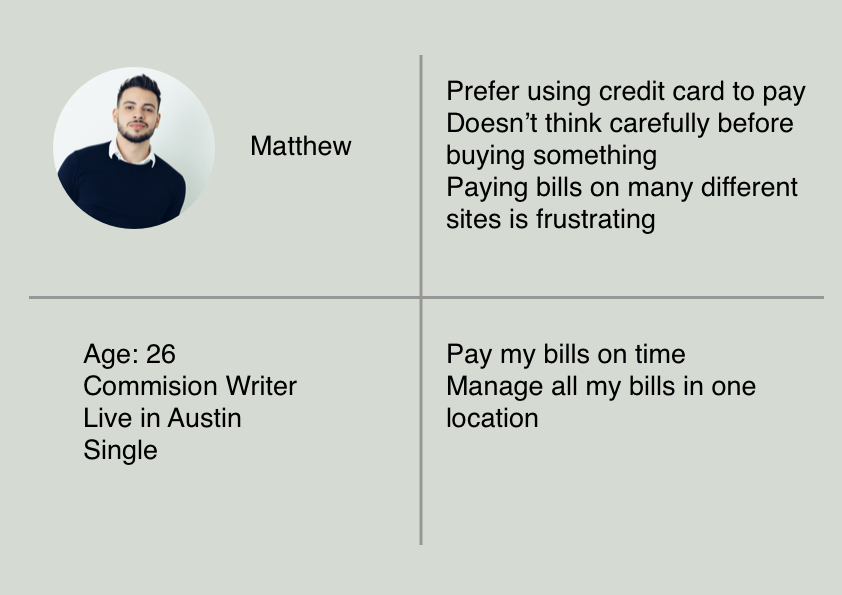

Bill Pay App
Yesterday is your bill due date and you don't remember have you paid it yet. How would you react? You will open your email, scroll down to search for payment confirm. Or you open your laptop, log in bank account and look for payment history? With this app you can monitor and pay your bills easily.
User Persona
Interview
I interviewed some users on how they go through paying bill process. Most of them have problems such as forgot the due dates, user name or password to log in. They don't want to access multiple websites because they have many different bills to pay